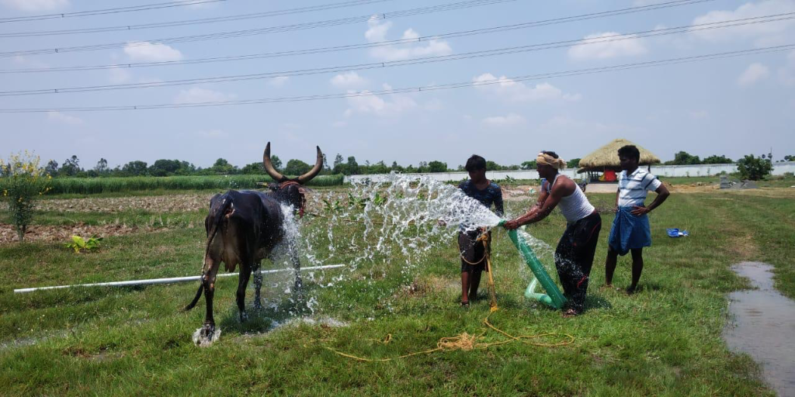
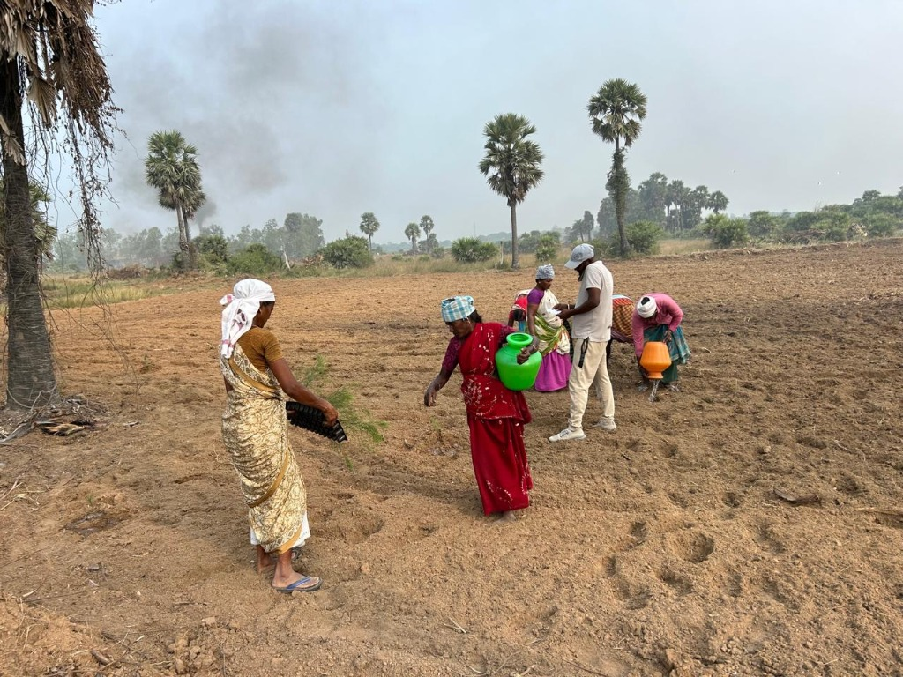
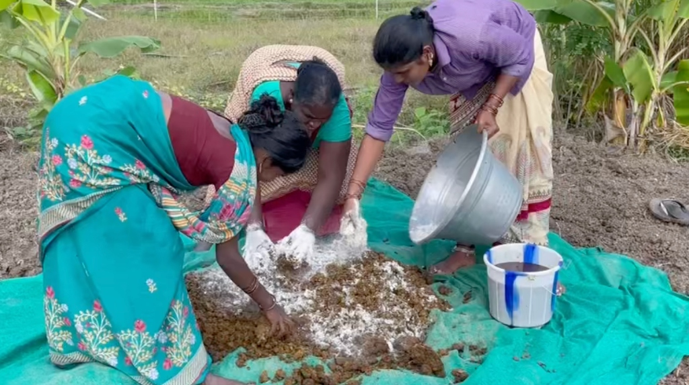
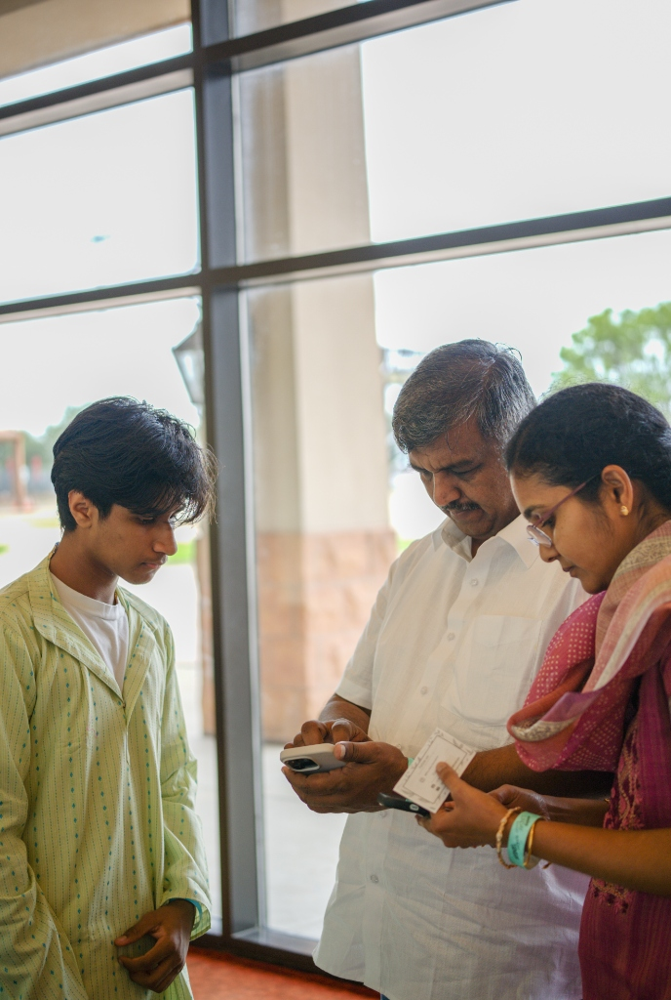

At Mann Nalam
through grassroots partnerships that establish community gardens, deliver sustainable farming infrastructure, and expand the adoption of organic agricultural practices.


Led by students across the U.S. and India, Mann Nalam directly supports South Indian farmers. Our programs focus on building organic community gardens, distributing seeds and tools, and providing hands-on training to help farmers transition to sustainable agriculture.

Mann Nalam works closely with organizations like Saroma Foundation to identify struggling farms and implement real solutions. By working on the ground alongside farmers, we create sustainable, long-term solutions that go beyond temporary fixes.

We mobilize the global South Indian diaspora and local communities to fund our efforts and advocate for farmers. By turning awareness into action, we inspire communities to directly support farmers and drive long-term change.